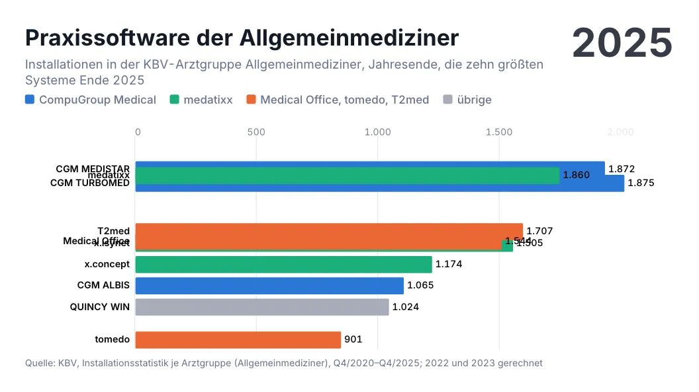
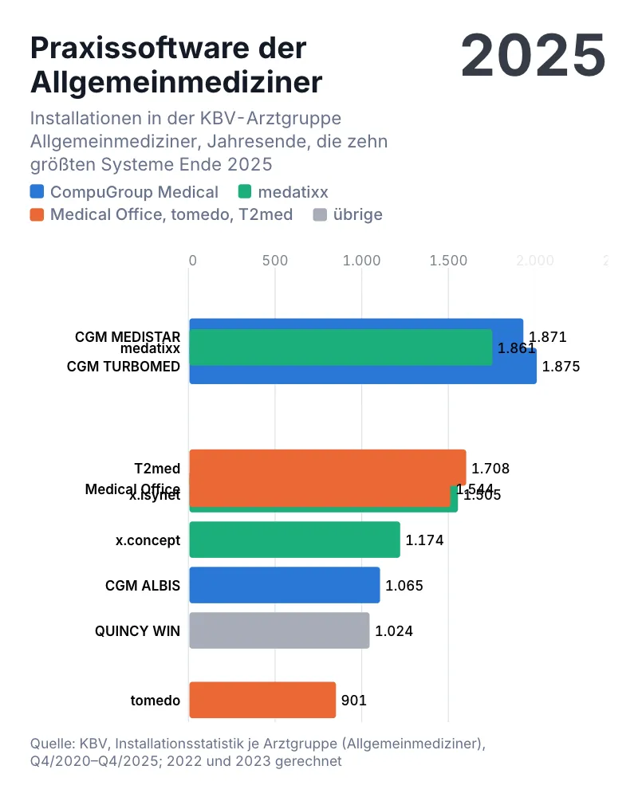

Praxissoftware der Allgemeinmediziner: medatixx vorn
In der Arztgruppe Allgemeinmediziner der Kassenärztlichen Bundesvereinigung (KBV) führt Ende 2025 erstmals medatixx: 1.892 Installationen, knapp vor CGM MEDISTAR mit 1.857 und CGM TURBOMED mit 1.850. Drei Monate vorher lag medatixx noch auf Platz 3. T2med folgt mit 1.737 Installationen auf Platz 4; Ende 2020 waren es 505.


Das Wichtigste in Kürze
- Die Spitze ist eng: Zwischen Platz 1 und Platz 4 liegen 155 Installationen. Unter allen Arztsystemen führt dagegen CGM MEDISTAR mit deutlichem Abstand.
- CGM verliert hier besonders: TURBOMED fiel bei den Allgemeinmedizinern von 3.321 Installationen Ende 2020 auf 1.850 (minus 44,3 Prozent), MEDISTAR von 2.555 auf 1.857 (minus 27,3 Prozent).
- Die Neuen wachsen hier besonders: T2med von 505 auf 1.737, tomedo von 291 auf 920, das neue medatixx von 621 auf 1.892.
- Nach Herstellern (die 20 größten Systeme der Gruppe, 18.909 Installationen): medatixx 31,1 Prozent, CompuGroup Medical 28,6 Prozent, Medical Office, tomedo und T2med zusammen 22,2 Prozent.
Warum die Allgemeinmedizin anders aussieht
In der Gesamtliste der ärztlichen Systeme hat CompuGroup Medical 32,4 Prozent und liegt vor medatixx. Bei den Allgemeinmedizinern ist es umgekehrt. T2med hat hier 9,2 Prozent der Installationen der 20 größten Systeme, unter allen ärztlichen Systemen 6,0 Prozent.
Die KBV ordnet jede Installation der Arztgruppe zu, in der abgerechnet wird; jede Gruppe hat deshalb ihren eigenen Markt. Warum Allgemeinmediziner anders wählen als andere Fachgruppen und warum eine Praxis wechselt, sagt die Statistik nicht.
Für Anbieter von Schnittstellen heißt das: In der Allgemeinmedizin teilen sich vier Systeme die Spitze fast gleichauf, jedes hat für sich höchstens rund ein Zehntel der Installationen der 20 größten Systeme.
Dazu kommt Nachwuchs: 2024 waren 10.752 Ärztinnen und Ärzte in einer geförderten ambulanten Weiterbildung zur Allgemeinmedizin, fast doppelt so viele wie 2015 mit 5.449 (KBV, Förderung der Allgemeinmedizin, abgerufen am 29. Oktober 2026). Viele von ihnen arbeiten in Teilzeit: Den Köpfen entsprachen 2024 rund 6.130 Vollzeitstellen. Wie viele sich später niederlassen und dabei eine Praxissoftware neu wählen oder übernehmen, zählt keine Statistik.
Was die Zahl nicht sagt
- Allgemeinmediziner sind nicht alle Hausärzte. Hausärztlich tätige Internisten stehen in der Arztgruppe Internisten, zusammen mit fachärztlichen; dort führt CGM MEDISTAR. Praktiker sind eine eigene Gruppe.
- Nur die 20 größten Systeme. Die KBV veröffentlicht je Arztgruppe nur diese; Anteile beziehen sich auf sie.
- Installationen, keine Praxen. Gezählt werden Abrechnungen mit der Prüfnummer eines Systems. Wie viele Ärztinnen und Ärzte an einer Installation arbeiten, steht nicht darin.
- Keine Bewertung. Die Zahlen zeigen Verbreitung, nicht Qualität. Diese Seite empfiehlt keine Software.
Gerechnet
Für Ende 2022 und Ende 2023 ist kein KBV-Bericht archiviert. Die Werte der Grafik für diese Jahre sind linear zwischen den nächsten belegten Quartalen gerechnet (31.03.2022 und 31.03.2023 bzw. 30.09.2023 und 31.12.2024), 20 von 60 Werten. Gerechnet sind außerdem die Herstelleranteile und Veränderungen. Alle anderen Werte stehen so in den Berichten. Methode je Wert in der Datenherkunft.
Quelle und Methode
Kassenärztliche Bundesvereinigung, Installationsstatistiken je Arztgruppe (Arztgruppe Allgemeinmediziner und „TOP 20 Systeme je Fachgruppe“, Datenstand 31.12.2025); ältere Berichte über das Webarchiv (Datenstände 31.12.2020 bis 30.06.2025). Abgerufen am 26. Oktober 2026. Den Markt aller Arztsysteme zeigt Welche Praxissoftware Arztpraxen nutzen, die Hersteller CGM, medatixx und die Neuen, alle Systeme Praxisverwaltungssysteme in Deutschland.
Häufige Fragen
Welche Praxissoftware nutzen Allgemeinmediziner?
Ende 2025 am häufigsten medatixx (1.892 Installationen), CGM MEDISTAR (1.857), CGM TURBOMED (1.850), T2med (1.737) und Medical Office (1.548), laut KBV-Statistik der Arztgruppe Allgemeinmediziner.
Welche Praxissoftware nutzen Hausärzte?
Eine Statistik für alle Hausärzte gibt es nicht. Die KBV zählt nach Arztgruppen; die größte hausärztliche Gruppe sind die Allgemeinmediziner, dort führt Ende 2025 medatixx. Hausärztlich tätige Internisten zählen zu den Internisten, wo CGM MEDISTAR vorn liegt.
Welche Praxissoftware wächst bei Allgemeinmedizinern?
T2med, tomedo und das neue medatixx haben sich seit Ende 2020 jeweils etwa verdreifacht. CGM TURBOMED, CGM MEDISTAR und x.isynet verloren im selben Zeitraum ein Viertel bis fast die Hälfte ihrer Installationen.